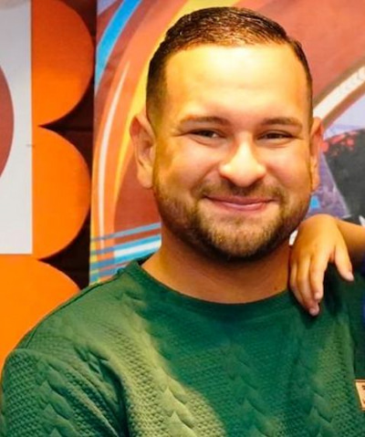

Fernando Lima/ WDD 130.

Olá Me chamo Fernando Almeida de Lima sou de Fortaleza-Ce. Sou casado com a Camila. gosto de assistir aos jogos do Fortaleza e os jogos do Flamengo. Quando tenho tempo gosto de jogar videogame.

Olá Me chamo Fernando Almeida de Lima sou de Fortaleza-Ce. Sou casado com a Camila. gosto de assistir aos jogos do Fortaleza e os jogos do Flamengo. Quando tenho tempo gosto de jogar videogame.